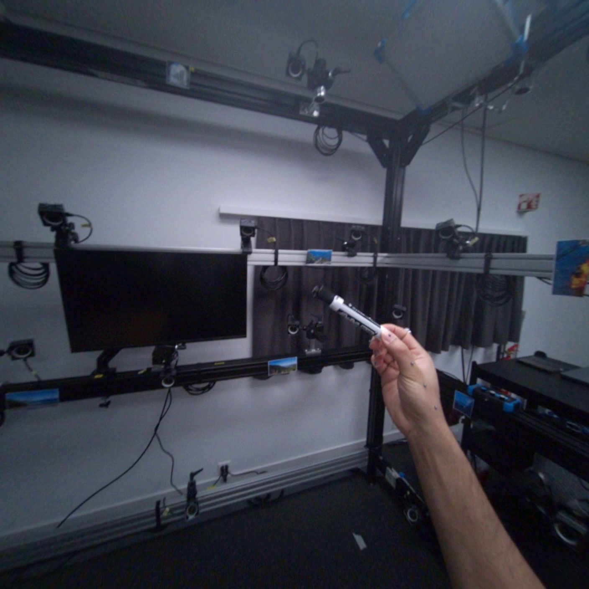
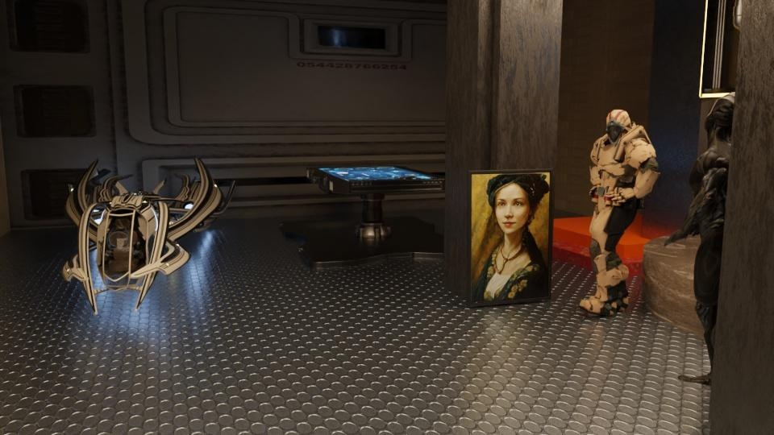

3 examples (DAVIS · HOT3D · WorldTrack) · Molmo2-predicted 3D tracks → bench-v3 pipeline → DaS denoise vs Sora 2 (no tracks) · 7 metrics, best generative model marked ★
| PSNR ↑ | SSIM ↑ | LPIPS ↓ | Tem-Con ↑ | Subj-Cons ↑ | |ΔMotion-Smooth| ↓ | |ΔDynamic-Deg| ↓ | |
|---|---|---|---|---|---|---|---|
| DAVIS — bear walks left · T_pred=30, D_target=1.25 s, GT 854×480, 96 pts | |||||||
| GT | — | — | — | 0.9720 | 0.9676 | — | — |
| DaS (pred) | 14.168 | 0.1997 | 0.4513 | 0.9677 | 0.8553 | 0.0073 | 0.0000 |
| Sora 2 | 12.930 | 0.2087 | 0.5359 | 0.9477 | 0.9611 | 0.0041 | 0.0000 |
| HOT3D — put down whiteboard marker · T_pred=30, D_target=1.00 s, GT 1408×1408, 64 pts | |||||||
| GT | — | — | — | 0.9526 | 0.8505 | — | — |
| DaS (pred) | 12.996 | 0.5267 | 0.6817 | 0.9569 | 0.9399 | 0.0188 | 0.0000 |
| Sora 2 | 8.516 | 0.4271 | 0.7752 | 0.9927 | 0.9963 | 0.0226 | 1.0000 |
| WorldTrack — person walks right→left · T_pred=30, D_target=1.00 s, GT 960×540, 24 pts | |||||||
| GT | — | — | — | 0.9804 | 0.9897 | — | — |
| DaS (pred) | 22.665 | 0.6321 | 0.1651 | 0.9708 | 0.9732 | 0.0036 | 0.0000 |
| Sora 2 | 15.368 | 0.3716 | 0.5755 | 0.9494 | 0.9321 | 0.0040 | 1.0000 |
|gen − GT| — lower = closer to GT's motion profile.
Predicted track from rollout5_davis_test_s0of1. 96 points × 30 future frames covering source frames [3, 32].
| PSNR ↑ | SSIM ↑ | LPIPS ↓ | Tem-Con ↑ | Subj-Cons ↑ | |ΔMS| ↓ | |ΔDD| ↓ | |
|---|---|---|---|---|---|---|---|
| GT | — | — | — | 0.9720 | 0.9676 | — | — |
| DaS (pred) | 14.168 | 0.1997 | 0.4513 | 0.9677 | 0.8553 | 0.0073 | 0.0000 |
| Sora 2 | 12.930 | 0.2087 | 0.5359 | 0.9477 | 0.9611 | 0.0041 | 0.0000 |
Predicted track from rollout5_hotworld_test_s*of10 (clip clip-001928_obj4_s027_e081). 64 points × 30 frames covering source [3, 32]. Camera frame, K[t0] fitted from source NPZ at t0 (residual mean 3.23 px on 1408×1408).
| PSNR ↑ | SSIM ↑ | LPIPS ↓ | Tem-Con ↑ | Subj-Cons ↑ | |ΔMS| ↓ | |ΔDD| ↓ | |
|---|---|---|---|---|---|---|---|
| GT | — | — | — | 0.9526 | 0.8505 | — | — |
| DaS (pred) | 12.996 | 0.5267 | 0.6817 | 0.9569 | 0.9399 | 0.0188 | 0.0000 |
| Sora 2 | 8.516 | 0.4271 | 0.7752 | 0.9927 | 0.9963 | 0.0226 | 1.0000 |

Predicted track from rollout5_hotworld_test_s9of10 (clip cab_e_3rd_6_clip01_obj1_2_3_t0-127). 24 points × 30 frames covering source [3, 32]. World frame; c2w from extrinsics_w2c, constant K = (800, 800, 480, 270) on 960×540.
| PSNR ↑ | SSIM ↑ | LPIPS ↓ | Tem-Con ↑ | Subj-Cons ↑ | |ΔMS| ↓ | |ΔDD| ↓ | |
|---|---|---|---|---|---|---|---|
| GT | — | — | — | 0.9804 | 0.9897 | — | — |
| DaS (pred) | 22.665 | 0.6321 | 0.1651 | 0.9708 | 0.9732 | 0.0036 | 0.0000 |
| Sora 2 | 15.368 | 0.3716 | 0.5755 | 0.9494 | 0.9321 | 0.0040 | 1.0000 |
